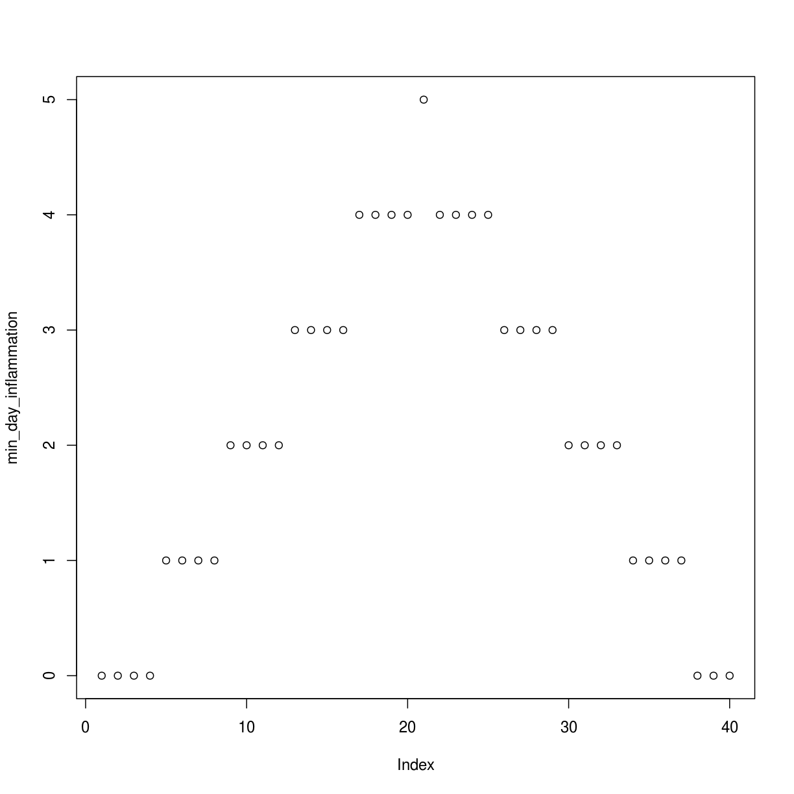
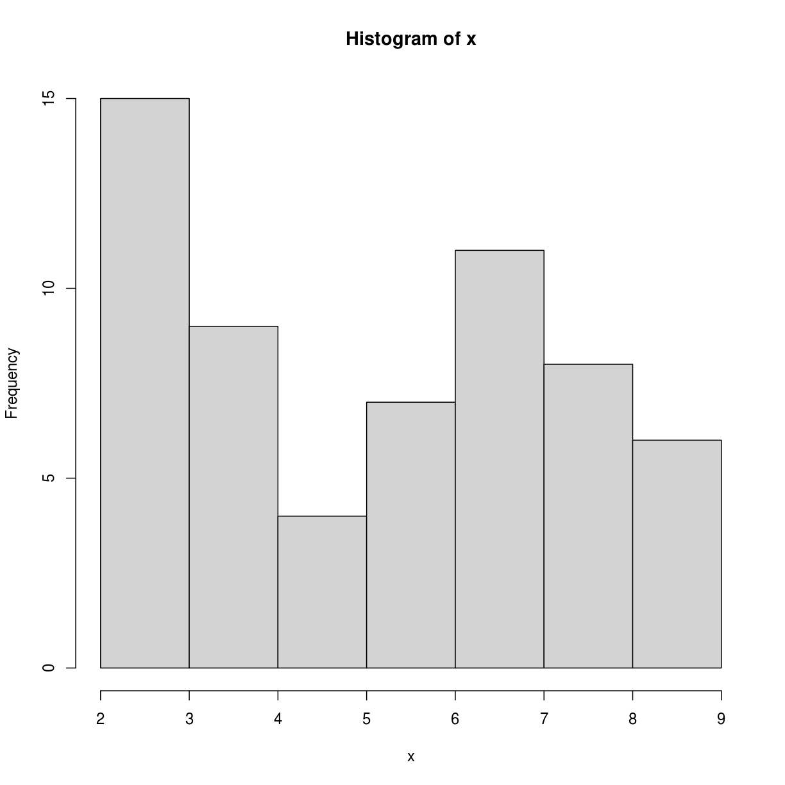
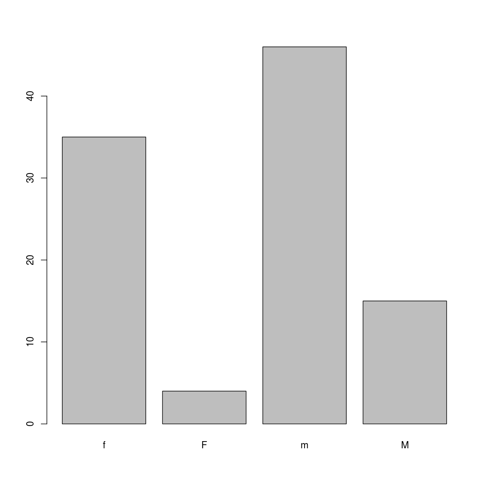
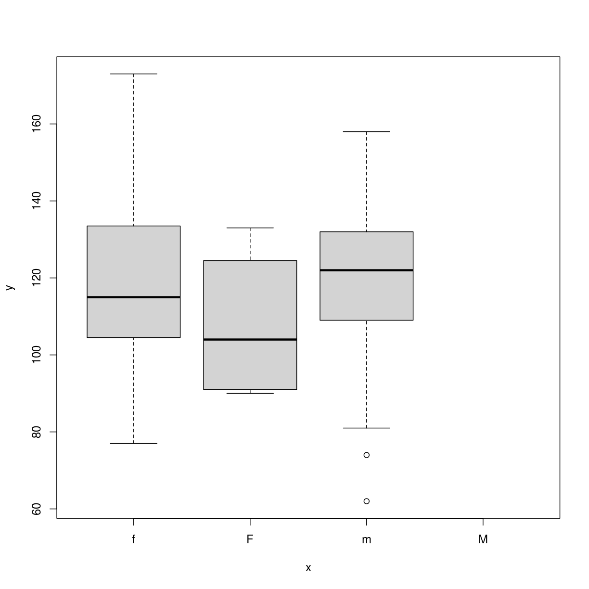
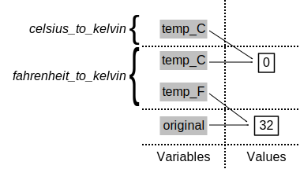
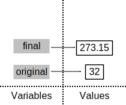

Toggle navigation
Home
Code of Conduct
Setup
Episodes
Analyzing Patient Data
Creating Functions
Analyzing Multiple Data Sets
Making Choices
Command-Line Programs
Best Practices for Writing R
Dynamic Reports with knitr
Making Packages in R
Introduction to RStudio
Addressing Data
Reading and Writing CSV Files
Understanding Factors
Data Types and Structures
The Call Stack
Loops in R
All in one page (Beta)
Extras
Reference
About
Discussion
Figures
Instructor Notes
License
Improve this page
Programming with R
: Figures





